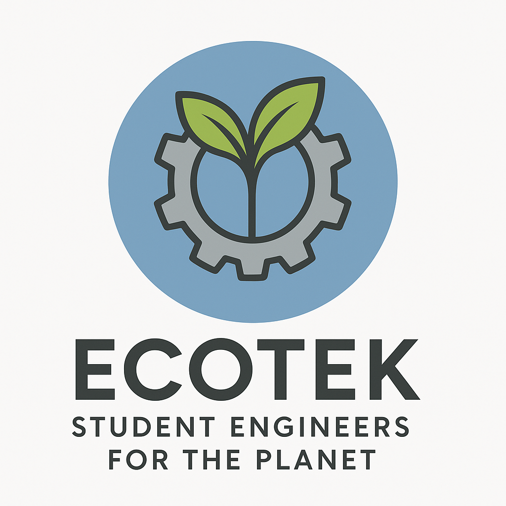

Student-led engineering for environmental change

EcoTek is a student-led organization dedicated to using engineering, technology, and teamwork to create sustainable solutions for real environmental challenges in our community.
We welcome students of all experience levels. Whether someone is just beginning to explore engineering or already has technical experience, EcoTek is a place to collaborate, learn, and create meaningful projects together.
Use the navigation bar above to learn more about EcoTek, our founder, our current project, and our future goals.